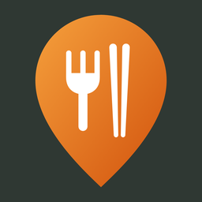

Nosh Next
Finds restaurants that match your taste, near wherever you are.
iPhone only for now. It's in beta on TestFlight.
What it does
- It learns what you like.Start with a few favorite places, and it builds a picture of your taste from them.
- Discover.Suggestions near you, ranked against your taste, each with a short reason.
- Save from anywhere.Share a link, a post, a screenshot or a photo of a storefront to Nosh Next, and it finds the place.
- Your lists on a map.Want to go and Favorites, with what's open now.
- Log visits.Add photos, a note, the bill (it reads the receipt) and a rating if you want one.
- Diets are rules.Vegetarian, vegan or gluten-free: places that don't fit are left out, not just ranked lower.
Install it
- Install TestFlight from the App Store.
- On your iPhone, open the invite:
Join the Nosh Next beta - Tap Accept, then Install.
- Open Nosh Next and sign in with your email. It sends you a code. If it doesn't arrive in a minute, check your spam folder.
Tell me what you think
Good or bad, I want to hear it. Problems, confusing moments and ideas are all useful.
If you know me, message me directly. Or take a screenshot in the app and tap Share Beta Feedback; it comes straight to me.